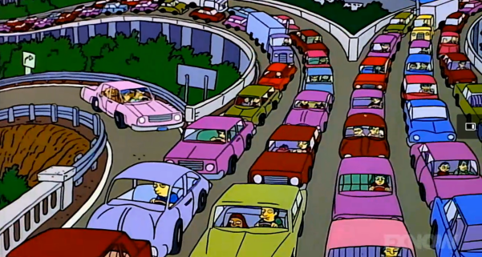
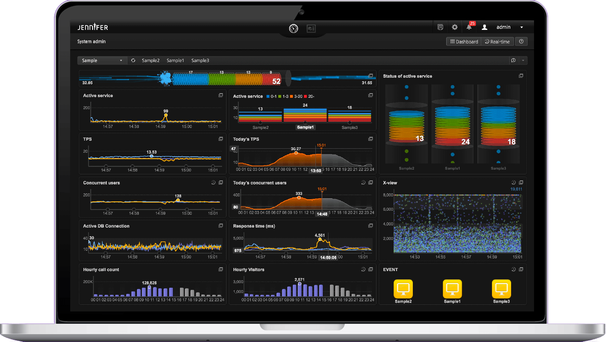
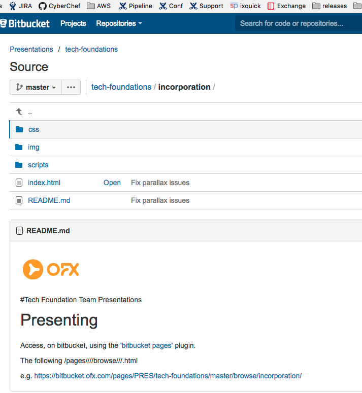
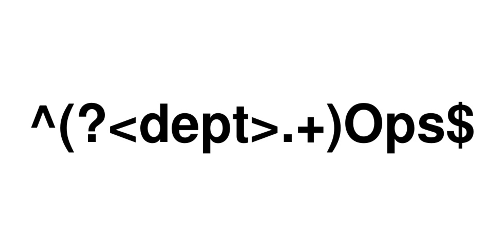
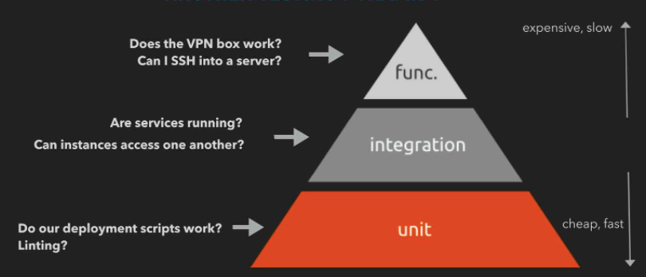
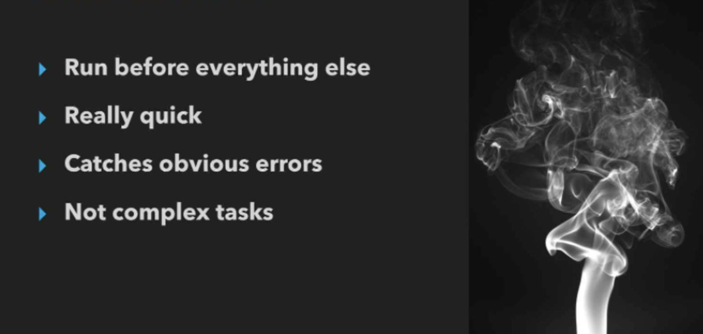

TECH FOUNDATION TEAM
"I would have made this presentation shorter, but I didn't have the time..."
> Mick Love, 2017, misquoting someone else
Agenda
- Why
- Team principles
- Team practices
- Where to next...
What was done
Move to AWS
Migration of Bamboo, Bitbucket, and Octopus from on-prem server to cloud
Prod SQL Server hosted on a Physical Server at Virtual Offis was migrated to AWS Multi-AZ RDS, which is now located in three separate zones in AU.
Moving BSL(s) and Fxsnet to AWS, utilizing AutoScale to horizontally expand FXSNET, BSLs when needed.
Established a resilient direct connect private link between Virtual Offis and AWS.
Brexit
Trumpageddon
Pipeline
RDS for x Number of environments is completely built using the pipeline.
Environment refresh process was born, meaning the creation of x Number of required environments on demand.
Version controlling applications.
Performance Testing.
CI Process - Automated tests run nightly which gives us fast feedback loop.
Release Management and Support.
etc...
Let's start with...
WHY?
To grow our business, we need to:
Reduce time to market
Reduce cost of infrastructure
Eliminate outages
Increase security
Increase scalability (e.g. Brexit, Trump, Yahoo)
one metric that matters is
"the time between creating a business hypotheses and having the empirical data needed to either prove or disprove it".
To support the demand of increased rate of production releases from application and business stakeholders...
We need to remove our bottlenecks...
Environment Creation
Code deployment
Test setup and execution
Overly tight architecture
IT Performance predictors
The 'State of Devops' report indicates the following 3 points as the best indicators of IT performance...
1. Version control of all Production artifacts
2. Continuous Integration and Deployment
3. Automated acceptance testing
So, how do WE get there...?
Tools
Automation
Access rights
and...
Clouds,
Unicorns and Rainbows

Communication
Consultation and Enablement
Relationships
Team Principles
People first > Process > Tools
Infrastructure As Code
Security As Code
Repeatability and reliability through our pipeline
...
Team Principles
Everybody has responsibility for the release process and feedback
Everyone knowing what production looks like
Done means, ...
... It's in production
Patches and Hacks are NOT applied along the line

Team Principles
Measure everything, be metrics driven
Team Practices
Develop systems, not software
Binaries are built once
The application package is immutable and not changed between environments
Everything in version control
These slides...,
.... in version control
Team Practices
Automate
- Testing
- Workflows
- Infrastructure
- Security
- Everything
Build quality in
Team Practices
Collaboration - Pairing, training each other
Not just devops, should be *ops
Or, for the regex'ers
Team Practices
Infrastructure as code (again!)
What does that even mean?
"The application of methods from software development to management of IT infrastructure"
| Some architect, once, on the web
infrastructure and security!!
Team Practices
The infrastructure test pyramid
Team Practices
Infrastructure smoke tests
Unit testing bash and powershell in the same day
Phase 1: Identify the current tasks for the team, prioritise them
Phase 2: Setup engagement structure for our customers
Phase 3: ???????????
Next Steps
Phase 4: Profit!
Current and Roadmap Items
Offis Migration
Environment Refresh Handover
Pipeline
ATS VPN connectivity
Automate Performance testing (with multi region, serverless, capability)
Logging
Contract based testing (PACT)
etc...
Recap
- Principles
- People over process, work together
- Infrastructure (and security) As Code
- Be metric driven
- Ensure we have a reliable, repeatable and transparent process
- Practices
- Everything in Version control... no hands on keyboards on release day
- Automate ALL the things
- Plan Do Check Act, repeat
Up Next
- Organise priorities
- Engagement model
- Offis, Elasticsearch, Pipeline, RAAS, PACT, etc...
The Platypus